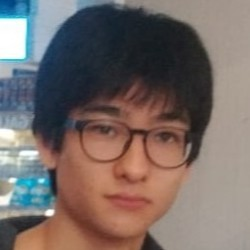

Pedro Tanaka

Desenvolvedor de software com formação técnica em Programação de Jogos Digitais pelo Instituto Federal do Paraná (IFPR), concluindo em 2026. Tenho experiência prática com desenvolvimento back-end, programação orientada a objetos e gestão de projetos de software. Busco uma oportunidade na área de tecnologia onde possa contribuir com código limpo, organizado e bem documentado, enquanto continuo evoluindo como profissional.
Dados Pessoais
- Nome: Pedro Tanaka Ferro
- Data de Nascimento: 04/12/2007
- Email: tanaka.pf07@gmail.com
- Telefone: (41) 98876-6960
Formação
- Ensino Fundamental: Escola Projeto 21 (7° ao 9° ano) (2019 - 2021)
- Ensino Médio Técnico: Programação de Jogos Digitais — Instituto Federal do Paraná (IFPR) (2023 - 2026)
Conhecimentos
- Linguagens: C, C++, C#, Java, JavaScript, HTML e CSS
- Ferramentas & Tecnologias: Git/GitHub, Unity, Godot, Blender, Inkscape
- Área de Interesse: Desenvolvimento Fullstack com preferência por Back-End
- Práticas: Controle de versão com Git, organização de projetos, revisão de código e documentação técnica
Habilidades
- Organização e clareza na escrita de código
- Adaptabilidade a novas tecnologias e ambientes
- Flexibilidade para atuar em diferentes frentes do projeto
- Aprendizado autodidata e contínuo
- Trabalho em equipe e comunicação técnica
- Gestão de projetos e cumprimento de prazos
Experiência
-
Reactor Rush — TCC (Gerente de Projeto & Programador)
Projeto de Conclusão de Curso em desenvolvimento desde 2026 pelo IFPR. Jogo educativo sobre operação de usina nuclear, com foco em representar processos físicos reais de forma lúdica. Atuo como programador principal e gerente do projeto, sendo responsável pela arquitetura do software, distribuição de tarefas e acompanhamento das entregas da equipe.
-
Projeto Meros — Desenvolvimento em Realidade Virtual (Voluntário)
Participação por 3 anos (2024 - 2026) em projeto do IFPR em parceria com o Instituto Meros do Brasil. Desenvolvimento de aplicação em Realidade Virtual utilizando Unity e C#, representando o ambiente submarino do peixe mero. Responsável pela implementação do personagem e integração com o ambiente 3D, com base em pesquisa técnica e científica.
-
Monitoria Acadêmica — Matemática e Física (IFPR)
Apoio a estudantes com dificuldades nas disciplinas de matemática e física durante o ano de 2025. Iniciou como voluntário e passou a bolsista nos últimos 3 meses. A experiência fortaleceu habilidades de comunicação, didática e resolução de problemas lógicos.
-
Modelagem 3D — Brunner / Nestlé (Freelancer)
Serviço técnico prestado em 2024 para a empresa Brunner, com demanda da Nestlé. Realização da modelagem 3D do produto Chocobiscuit no software Rhino, cumprindo especificações técnicas do cliente dentro do prazo estabelecido.
-
Playtester Voluntário — Tetr.io Insiders
Atuação contínua desde janeiro de 2026 como playtester voluntário da plataforma tetr.io, com aproximadamente 10 milhões de usuários. Identificação e reporte de bugs, sugestão de melhorias de usabilidade e participação em ciclos de feedback com a equipe de desenvolvimento.
Idiomas
- Português — Nativo
- Inglês — Avançado (leitura de documentação técnica, comunicação escrita)
- Espanhol — Básico